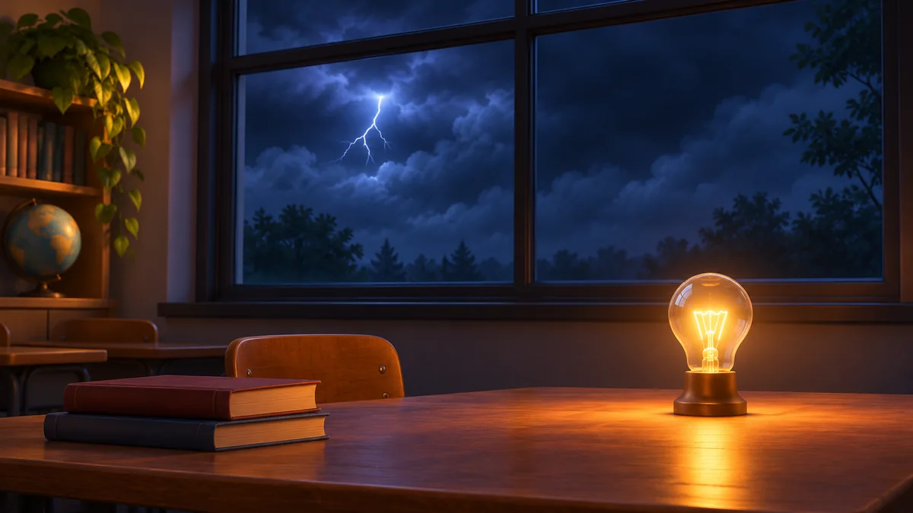
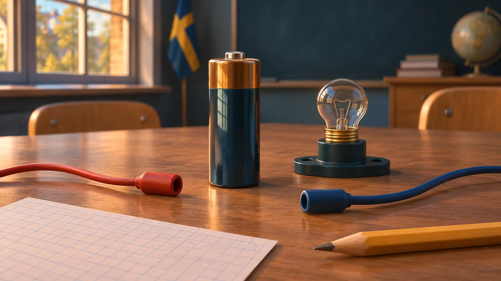

Vetenskaplig briefing · Fysik
Från blixt till lampa
En blixt och en lysande lampa har något gemensamt: elektriska laddningar rör sig. Men blixten slocknar nästan genast medan lampan kan fortsätta lysa. Skillnaden hjälper oss att förstå vad ström, spänning och resistans faktiskt betyder.

När det statiska inte längre är stilla
En tröja knastrar när man drar den över huvudet. Laddning har fördelats ojämnt, och när en del av den förflyttas snabbt kan det bli en gnista. I ett åskmoln separeras också laddningar. Det elektriska fältet kan till slut bli så starkt att en ledande kanal bildas genom luften. Då går en kort, mycket stark ström. Det är blixten. Den kan gå inne i ett moln, mellan moln eller mellan moln och mark.
Elektricitet är alltså inte ett ämne som fyller en sladd. Det är ett samlingsnamn för fenomen som har med elektrisk laddning att göra. En laddad ballong kan påverka andra föremål utan någon varaktig ström. En blixt visar vad som kan hända när laddning plötsligt börjar röra sig.
Det lysande undantaget på bordet

Tänk dig ett batteri, en liten lampa och två ledningar. En ledning lossnar. Lampan slocknar, men spänningen mellan batteriets poler försvinner inte. När du kopplar ihop ledningen igen finns en sluten väg genom lampan, och en stadig ström kan gå så länge batteriet kan driva kretsen. Flytta glappet till andra sidan lampan. Resultatet blir detsamma: strömmen upphör oavsett på vilken sida du bryter den enkla kretsen.
Det finns redan rörliga elektroner i metallens ledningar. Lampan förbrukar dem inte. Batteriets kemiska reaktioner hjälper till att upprätthålla spänningen, och i lampan överförs energi och omvandlas till ljus och värme.
Tre ord för tre olika saker
- Strömstyrka, i ampere, anger hur mycket laddning som passerar genom ett tvärsnitt per sekund. Säg ström genom lampan.
- Spänning, i volt, är en skillnad mellan två punkter: hur mycket energi per laddningsmängd som kan överföras där. Säg spänning mellan batteriets poler. Spänning är inte skillnad i mängden laddning.
- Resistans, i ohm, beskriver hur mycket en komponent motverkar strömmen. Jämför två fasta motstånd vid samma spänning: det större motståndet ger mindre ström. En verklig glödlampa är inte ett fast motstånd; glödtrådens resistans ändras när den blir varm.
En pump och ett vattenrör hjälper i en enda viktig punkt. Pumpen kan hålla en tryckskillnad fast ventilen är stängd, men inget vatten flödar då genom röret. På motsvarande sätt kan batteriet ha spänning fast den enkla kretsen är bruten och ingen stadig ström går genom lampan. Sedan behöver vi lämna liknelsen: spänning är inte vattentryck, och laddning är inte ett bränsle som tar slut i lampan.
Testa tanken


Ett batteri har fortfarande spänning mellan polerna. En ledning lossnar och lampan slocknar. Vad försvann, och vad fanns kvar? Strömmen genom lampan upphörde. Spänningen mellan batteriets poler fanns kvar. Just den skillnaden gör det lättare att läsa ett kopplingsschema: ledningens väg är viktigare än var batteriet och lampan råkar ligga på papperet.
Källor och vad de tillför
- NOAA National Severe Storms Laboratory: Lightning FAQ. Stöd för hur laddningsseparation och en ledande kanal i luft kan ge en blixt; förklarar också varför blixtar inte alltid går till marken.
- OpenStax: Potential Difference och Current. Definitionerna bakom spänning mellan två punkter och laddning per tid.
- OpenStax: Resistance and Simple Circuits. Stöd för jämförelsen mellan fasta motstånd och för pumpens begränsade roll som analogi.
- PhET: Konstruera kretsar, likström. Ett sätt att prova den slutna och brutna kretsen, inte belägg för hur en blixt uppstår.